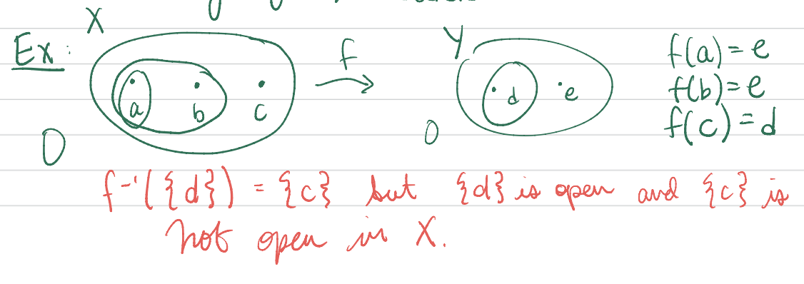
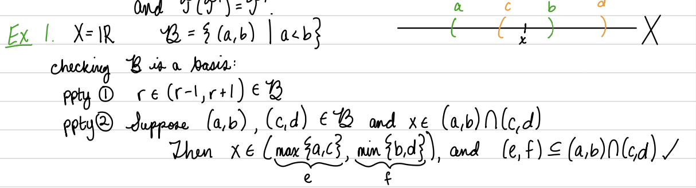

“Topology is precicely the mathematical discipline that allows passage from local to global.”
―Rene Thom
Subsection2.1.1Topology
Definition2.1.1.
A topology on a set \(X\) is a collection \(\cT \) of subsets of \(X\) satisfying:
\(\es \) and \(X\) are elements of \(\cT \text{;}\)
whenever \(A_\alpha \) is in \(\cT \) for all \(\alpha \text{,}\) then \(\cup_\alpha A_\alpha \) is in \(\cT \text{;}\) and
whenever \(A_1,\dots,A_n\) are in \(\cT \text{,}\) then \(\cap_{i=1}^n A_i\) is in \(\cT \text{.}\)
Definition2.1.2..
A topological space is a set \(X\) together with a topology \(\cT \) on \(X\text{,}\) often denoted \((X,\cT )\text{.}\) The elements of \(X\) are called points in \(X\text{,}\) and the elements of \(\cT \) are called open sets in \(X\) or open sets relative to \(X\) or open sets rel \(X\text{.}\)
Example2.1.3.Examples of Topologies and Topological Spaces:.
Indiscrete topology on a set \(X: \cT_{\text{ind}} := \{\es, X\}\text{.}\)
Discrete topology on a set \(X: \cT_{\text{dis}} := \{U | U \sse X\} = \cP (X) =\) the set of all subsets of \(X\text{.}\)
Euclidean topology on \(\R^n: \cT_{\text{Eucl}} := \{U \sse \R | \text{ for all } p \in U \text{ there is an } r > 0 \text{and} q \in \R^n \text{such that} p \in B(q,r) \sse U \}\text{,}\) where \(B(q,r) = B_n(q,r) := \{x \in \R^n | d_{\text{Eucl}}(q,x) < r\}\) is the ball of radius \(r\) centered at \(q\) (and \(d_Eucl\) is Euclidean distance).
Euclidean topology relative to a subset \(X \sse \R^n: \cT_{\text{Eucl sub}} := \{U \cap X | U \sse \R^n \text{ and } U\in\cT_{\text{Eucl}}\}\text{.}\)
Finite complement topology on a set \(X: \cT_{fc} := \{U \sse X | X\setminus U \text{ is a finite set }\} \cup \{\es \}\text{.}\)
Included point topology on a set \(X\) with included point \(a \in X: \cT_{\text{incl}} := \{U \sse X | a \in U\} \cup \{\es \}\text{.}\)
Excluded point topology on a set \(X\) with excluded point \(a \in X: \cT_{\text{excl}} := \{U \sse X | a \not\in U\} \cup \{X\}\text{.}\)
Infinite ray topology on \(\R : \cT_{\text{ray}} := \{ (-∞,a) | a \in \R \} \cup \{\es,\R \}\text{.}\)
Preimage topology constructed on a set \(X\) from a function \(f:X \to Y\) and a topology \(\cT_Y\) on \(Y: \cT_f := \{f\inv(U) | U \in \cT_Y\}\text{.}\)
Line with two origins with set \((\R \setminus \{0\}) \cup \{*,@\}\) and topology \(\cT := \{U | U \sse \R,\sm \{0\} \text{ and }U \in \cT_{\text{Eucl}}\} \cup \{(U\setminus \{0\}) \cup \{*\} | U \sse \R, 0 \in U, \text{ and }U \in \cT_{\text{Eucl}}\} \cup \{(U\setminus \{0\}) \cup \{@\} | U \sse \R, 0 \in U, \text{ and }U \in \cT_{\text{Eucl}}\} \cup \{(U\setminus \{0\}) \cup \{*,@\} | U \sse \R, 0 \in U, \text{ and }U \in \cT_{\text{Eucl}}\}\text{.}\)
On the finite set \(X = \{a,b,c\}: \cT = \{ \es, \{a\}, \{a,b\}, \{a,c\}, X\}\text{.}\)
Let \(\cT \) and \(\cT'\) be topologies on a set \(X\text{.}\) If \(\cT \sse \cT \text{,}\) then the topology \(\cT \) is called smaller or coarser than \(\cT'\text{,}\) and the topology \(\cT'\) is called larger or finer than \(\cT \text{.}\)
Example2.1.7.
Subsection2.1.2Continuity
Motivation: Unraveling the \(\varepsilon -\delta \) definition of continuous in Euclidean space to an equivalent definition on open sets.
Definition2.1.8.Continuous Function.
Let \(X\) and \(Y\) be topological spaces, and let \(f: X \to Y\) be a function. The function \(f\) is continuous if and only if for every open set \(U\) in \(Y\text{,}\) the preimage \(f\inv(U)\) is open in \(X\text{.}\)
Example2.1.9.
Examples
Theorem2.1.10.CC0.
Let \(c\) be a real number. The function \(f:\R \to \R \) defined by \(f(r) := cr\) for all \(r \in \R \) is continuous.
The functions from \(\R^2\) to \(\R \) defined by addition, subtraction, and multiplication are continuous.
The function \(g:\R \times (\R \setminus \{0\}) \to \R \) defined by \(g(x,y) := x/y\) is continuous.
A uniform limit of continuous functions from \(\R \) to \(\R \) is continuous; hence sine and cosine are continuous.
Theorem2.1.11.
CC1.
If \(X\) and \(Y\) are topological spaces and \(f:X \to Y\) is a constant function, then \(f\) is continuous.
CC2.
If \(f: X \to Y\) and \(g: Y \to Z\) are continuous, then the composition \(g \circ f: X \to Z\) is continuous.
Example2.1.12.

Theorem2.1.13.
Let \((X,\cT_X)\) and \((Y,\cT_Y)\) be topological spaces and let \(f: X \to Y\text{.}\) The function \(f\) is continuous if and only if for all \(V \in \cT_Y\) and \(f(x) \in V\text{,}\) there exist \(U \in \cT_X\) with \(x \in U\) and \(f(U) \sse V\text{.}\)
Let \(X\) and \(Y\) be topological spaces. A function \(f: X \to Y\) is a homeomorphism if \(f\) is a continuous bijection and \(f\inv\) is also continuous. The spaces \(X\) and \(Y\) are called homeomorphic, or topologically equivalent, if there is a homeomorphism from \(X\) to \(Y\text{;}\) in symbols this is written \(X \cong Y\text{.}\)
Theorem2.1.15.
"Homeomorphic" is an equivalence relation on topological spaces.
Big picture:.
Euclidean, spherical and hyperbolic metric spaces of the same dimension are homeomorphic. \(E^2 \cong H^2 \cong S^2\setminus \{(0,0,1)\}\text{.}\)
Definition2.1.16.Homeomorphism Problem.
The Homeomorphism Problem asks: Is there a computer algorithm that, upon input of two topological spaces \(X\) and \(Y\text{,}\) can determine whether or not \(X \cong Y\text{?}\)
(Backing up a step: How do you input a space into a computer?!)
Example2.1.17.
Subsection2.1.3Bases
Definition2.1.18.Basis.
A basis on a set \(X\) is a collection \(\cB \) of subsets of \(X\) satisfying:
For each \(p\) in \(X\) there is an \(N_p\) in \(\cB \) such that\(p \in N_p\text{,}\) and
whenever \(N_1,N_2\) are in \(\cB \) and \(p\) is an element of \(N_1 \cap N_2\text{,}\) then there is an \(N_3\) in \(\cB \) such that \(p \in N_3 \sse N_1 \cap N_2\text{.}\)
Definition2.1.19.Topology Generated by a Basis.
The topology generated by a basis \(\cB \) is \(\cT (\cB ) := \{U \sse X | \text{ for all }p\in U \text{ there is an } N\in \cB \text{ such that }p \in N \sse U\}\text{.}\)
Lemma2.1.20.
If \(\cB \) is a basis on \(X\text{,}\) then \(\cT (\cB )\) is a topology on \(X\text{.}\)
If \(\cT'\) is a topology on \(X\text{,}\) then \(\cT'\) is also a basis on \(X\text{,}\) and \(\cT (\cT') = \cT'\text{.}\)
Example2.1.21.

Theorem2.1.22.
If \(\cB \) is a basis on \(X\) and \(U \sse X\text{,}\) then \(U\) is in \(\cT (\cB )\) if and only if \(U\) is a union of elements of \(\cB \text{.}\) That is, \(\cT (\cB ) = \{ \cup \alpha B_\alpha | B_\alpha \in \cB for all \alpha \}\text{.}\)
Example2.1.23.The Euclidean Basis.
The Euclidean basis on \(\R^n\) is \(\cB_{\text{Eucl}} := \{ B_n(q,r) | q \in \R^n \text{ and }r > 0\}\text{.}\)
The lower limit topology on the set \(\R \) is the topology \(\cT ll := \cT (\cB ll)\) generated by the basis \(\cB ll := \{[a,b) | a,b \in \R, a < b\}\text{.}\)
Theorem2.1.26.
Let \(\cB Y\) be a basis on a set \(Y\text{.}\) A function \(f: (X,\cT_X) \to (Y,\cT (\cB Y))\) is continuous if and only if for every basis element \(N \in \cB Y\text{,}\) the preimage \(f\inv(N)\) is open in \(X\text{.}\)
Theorem2.1.27.
Let \(\cB \) and \(\cB'\) be bases on a set \(X\text{.}\) Then \(\cT (\cB ) \sse \cT (\cB')\) iff for all \(N\) in \(\cB \) and \(x\) in \(N\text{,}\) there is an \(N'\) in \(\cB'\) with \(x \in N' \sse N\text{.}\)
Definition2.1.28.Subbasis.
A subbasis on a set \(X\) is a collection \(\cS \) of subsets of \(X\) satisfying \(\cup_{U \in \cS } U = X\text{.}\)
Definition2.1.29.
The basis generated by a subbasis \(\cS\) is \(\cB (\cS ) := \{\cap i=1n Ui | n \in \N \text{ and }Ui \in \cS \text{ for all }i\}\text{.}\) The topology generated by a subbasis \(\cS\) is \(\cT (\cS ) := \cT (\cB (\cS ))\text{.}\)
Example2.1.30.
Theorem2.1.31.
Let \(\cS_Y\) be a subbasis on a set \(Y\text{.}\)
The basis \(\cB (\cS_Y)\) generated by the subbasis \(\cS_Y\) is a basis, and hence the topology \(\cT (\cS_Y)\) generated by the subbasis \(\cS_Y\) is a topology.
A function \(f: (X,\cT_X) \to (Y,\cT (\cS_Y))\) is continuous if and only if for every subbasis element \(V \in \cS_Y\text{,}\) the preimage \(f\inv(V)\) is open in \(X\text{.}\)